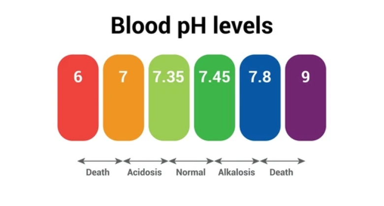
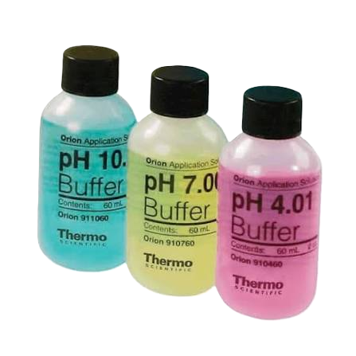
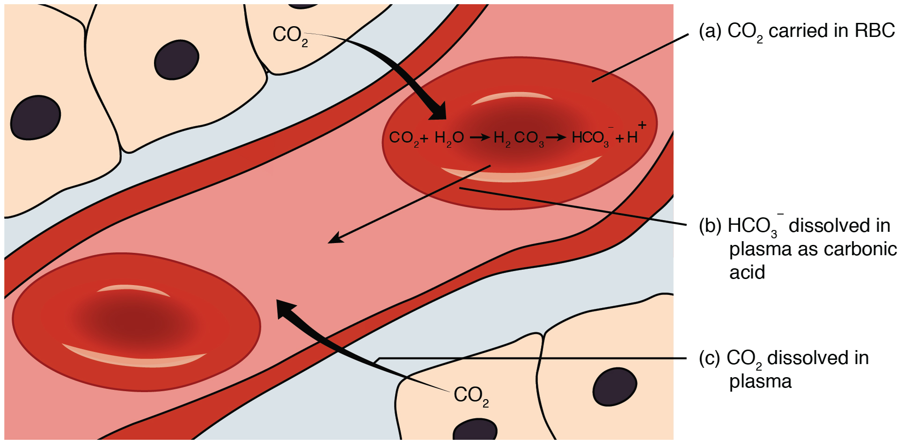

Blood pH
How does blood maintain a pH between 7.2-7.4?

01 Introduction: Understanding Blood pH
Blood pH is the measurement of how acidic or basic your blood is.
The pH scale measures the acidity of a solution from on the concentration of hydronium ions (H3O+) in a solution. It can be calculated using the formulas:
pH = -log[H3O+]
pH = 14 + log [OH-]
Your body’s blood is naturally slightly basic, with a normal pH between 7.2-7.4. It’s very important that the pH is maintained within this range because many of your body’s biological reactions and enzymes depend on specific pH conditions to function.
Even small changes in your blood pH can create health risks. If your blood reaches pH values of below 6.8 or above 7.8, it could potentially be fatal.

A buffer is an aqueous solution that resists change in pH when adding acid/base in small amounts. Buffers usually consist of a weak acid and its conjugate base, or a weak base and its conjugate acid.
In the human body, buffer systems often help prevent suddent changes in blood pH, allowing various biological processes to continue under stable conditions.

02 The Science Behind pH Regulation
The primary blood buffer system consists of carbonic acid (H2CO3) and bicarboniate ions (HCO3-).
These substances participate in reversible reactions, allowing the system to regulate any changes in acidity and keep a stable blood pH.
The human body carries more than 15 moles of carbon dioxide (CO2) from its tissues to its lungs each day. This carbon dioxide can dissolve in the water in blood, where it reacts to form carbonic acid (H2CO3).
Carbonic acid will react with water to form hydronium ions, so an increase in the amount of dissolved CO2 will make the blood more acidic.

The blood buffer is made up of several chemical reactions:
CO2(aq) + H2O(l) ↔ H2CO3(aq)
The carbonic acid and it's conjugate base help regulate blood pH by reacting with any added acid/base.
When acid is added and enters the bloodstream, the concentration of hydronium ion (H3O+) increases, which makes pH decrease. There’s an excess of hydronium ions, so bicarbonate ions will react with some of these excess ions to form carbonic acid and water. This is the reverse of the 2nd reaction, which can be observed above.
As a result of consuming this excess hydronium, the buffer reduces the decrease in pH.
Likewise, when a base enters the blood, hydroxide ions are in excess, causing pH to increase. Carbonic acid will then react with these excess ions to form bicarbonate ions and water. This is the reverse of the 3rd reaction.
By consuming some of the added hydroxide ions, the buffer reduces the increase in pH.

Please note: no part of this website was made with AI